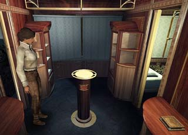

| 概要 | 地図 | |
| 淡いヒント集 | ヒント集 | 的確なヒント集 |
| 攻略最短ルート | Syberia 攻略へ |
| << 前の段階へ | 地域選択へ |
バラディレーン
|
駅

機関車の車内でオスカーに出会ったら、彼を追って切符売り場へ行こう。 切符売り場にいるオスカーから切符を許可証をもらうことができる。これは、旅を続けるために非常に重要なものである。 しかし、車内に戻ったときオスカーは切符も許可証も受け取ってくれない。それはなぜか? 答えは、手順が間違っているからである。許可証を先に渡さなくてはならないのだが、それには引が押されていない。 
公証人の家にあるカラクリ人形を使うと、印を押すことができる。まず、人形の帽子を動かすことでインクをはめることができる。その後、書類を置いて赤いボタンを押せば印鑑を押してくれるはずだ。 このように。

オスカーに許可証と切符を渡したら、貴重品室にものを置かなければならない。奥の棚にはシリンダーを、中央の柱には人形を、机にはマンモスの人形を置くことができる。 もしどれか1つでも足りなければ、オスカーが許さないだろう。 
この装置で、機関車のゼンマイを巻くことができる。 ハンドルを回した後に、レバーを動かせばゼンマイが巻ける。 |
| << 前の段階へ | 地域選択へ |
| 概要 | 地図 | |
| 淡いヒント集 | ヒント集 | 的確なヒント集 |
| 攻略最短ルート | Syberia 攻略へ |
Syberia
| 目次へ戻る | ページの上部へ |